5350vh 的舞台切成九段路，1,056 帧 webp 与四支影片由自研装载器按滚动位置分级加载，一支约 950 行的片元着色器独力承担撕裂、燃烬、纸与图纸——没有任何动画库。
一句话卖点写在标题里：Pear makes you appear。Pear AS（奥斯陆）自掏腰包做策略、软件、内容与外链，只从新增收入里抽成。整站只有一页，也只有一个动作：申请合伙。
这决定了页面的体裁。它不是落地页，而是一部约 53 屏长的滚动电影：整站包在一个 5350vh 高的舞台里，视口被固定，滚动量驱动一支影片、一千多帧序列图和两支 WebGL 着色器逐帧推进。四个章节像电影的四幕——The Model、The Work、The Terms、Questions——最后落到申请表与片尾字幕。
| 结论 | 依据 | 级别 |
|---|---|---|
Vite 构建，单 chunk index-BhJdAf8K.js（323,793 B）+ index-Bd_JnIbr.css（61,948 B） | HTML 引用与文件字节 | 实锤 |
| React 19.2.8 仅用于一次性渲染覆盖层 DOM | 打包内 version: "19.2.8"、createRoot(…).render(<StrictMode>)，之后全部命令式 | 实锤 |
Tailwind CSS v4 的 @layer theme 供主题变量，其余手写 CSS | 样式表 @layer properties/theme/base 结构与 --tw-* 变量 | 实锤 |
两支原生 WebGL1 program（主画面 .gl、页脚 .ftx），无 three.js | getContext("webgl")、createShader，无第三方库特征 | 实锤 |
三块 2D canvas（.lines 规则线、.fly 天空、.trans 过渡） | DOM 探针 5 块 canvas | 实锤 |
| 自研滚动：拦截 wheel，rAF 每帧 lerp .085 | L.current += (L.target − L.current) * .085 原文 | 实锤 |
| 无第三方字体、无分析脚本；Cloudflare Turnstile 在表单聚焦时按需加载 | HTML 注释与 An() 函数 | 实锤 |
| Flecha 出自 R-Typography，GT Standard 出自 Grilli Type | 字族名 | 推断 中高 |
HTML 里留着一条开发者注释：Source Serif 4 曾只是自托管 Flecha 后面的兜底，但 Google Fonts 的 css2 链路在每次冷加载都要多一次连接与请求，为一支永远不会渲染的字体，于是被拆掉。这句话就是这个站的工程气质。
词频：#fff 27 次、#000 16 次、#f2f1ed 与 #fffaea 各 3 次、#0b0a09、#1d1c19、#2e2109 各 2 次。
规则线与准星用带透明度的白或墨：--rule #ffffff39、--cross #ffffff86、--mark #fff；亮画面时切为 #1d1c192a、#1d1c1957、#1d1c19。切换不靠章节，靠画面亮度：每 160ms 把当前影像缩到 8×5 像素求 .299R+.587G+.114B 均值。桌面采样宽 0–58%、高 18%–86%，超过 168 进亮态、低于 132 退回；手机（≤720px）采样宽 30%–70%、高 15%–90%，阈值改为 185 进 / 150 退。若当前段自带 lit 标记则直接置亮，跳过采样。
| 字族 | 字重 | 文件字节 | 角色 |
|---|---|---|---|
| Flecha M | 300 / 400 | 41,272 / 39,240（另有 woff 兜底） | h1、beat、subhead、条款标题、问答标题 |
| Flecha S | 300 / 400 | 41,740 / 39,720 | 工作章标题、表单引导、页脚标语 |
| Flecha L | 300 / 400 | 39,056 / 37,728 | 「Asked before」、菜单章节名 |
| GT Standard L | 400 / 500 | 62,732 / 62,772 | 无衬线正文 |
| GT Standard Mono | 400 | 32,976 | 全部标签、导轨、按钮、芯片 |
覆盖层 .ov 是一张固定在视口上的制图纸：两条竖线在 --v1 5.3% 与 --v2 85.6%，两条横线在 --h1 5.3vw 与 --h2 calc(65.3% + 50px)；文案列起点 --colA 7.98%、--colB 23.7%。手机改为 4.75% 与 95.25%，--h1 60px。本页顶上那两条竖线、一条横线与两枚四芒星，用的就是这组值与原站那枚 16px 星形的原 path。
签名细节：规则线并不是 DOM 画的。.lines canvas 用 destination-in 把线条按影片的蓝天键控蒙版裁掉——先把当前帧缩到 320px 宽，逐像素算 alpha = (B − max(R, G) − 8) / 34，只有蓝色占优的区域保留。于是规则线只出现在天空里，被梨、人物和云自然遮挡，像画在画布背后。这是全站最便宜也最高级的一招：它免掉了为 1,056 帧逐帧制作遮挡层。
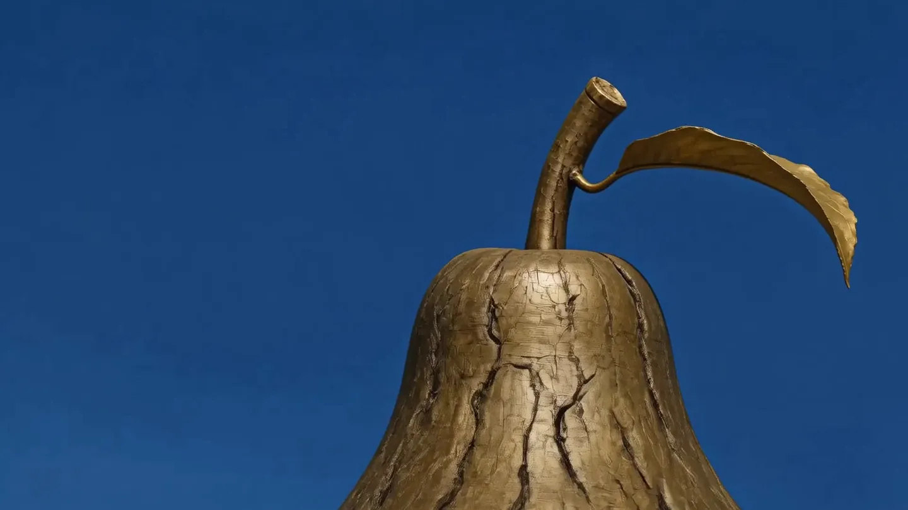
8 与 34。把偏置调低，梨的高光会被误判成天空而漏线；调高，天边的浅蓝会掉出去、线在地平线处断掉。原站取 8 / 34 的位置，正是让金属反光与天空刚好分开的那一档。「关键控」显示不做蒙版时的样子——线会横穿梨身，制图纸的错觉当场消失。| 段 | 长度 vh | 道路区间 | 内容 |
|---|---|---|---|
| 1 | 1200 | 0 – .224 | 影片、序列图、四个 beat、撕裂燃烬 |
| 2 | 600 | .224 – .336 | 蓝天图版横移，工作章文案与刻度 |
| 3 | 300 | .336 – .393 | coda：影像退去，纸面到来 |
| 4 | 900 | .393 – .561 | 条款两屏、图纸窗口、烧向梨树 |
| 5 | 300 | .561 – .617 | 「Asked before」手写签名 |
| 6 | 600 | .617 – .729 | 五张问答卡的三维转盘 |
| 7 | 500 | .729 – .822 | 天空帧序列到来 |
| 8 | 250 | .822 – .869 | 申请表 |
| 9 | 700 | .869 – 1 | 过渡帧、页脚循环影片、片尾 |
road ∈ [0,1]，下面的条按 [1200,600,300,900,300,600,500,250,700] 的真实比例分段（可直接点段跳过去）。图是 assets/screens/ 里 35 个道路位置的实拍，以 ?hero=colossus 固定首屏影片、SwiftShader 软渲染 WebGL 抓的；位置之间取最近帧，因此是「逐段」而非逐帧。导轨激活按原站的四个锚点 .012 / .232 / .400 / .628 判定。桌面精细指针且未开减弱动态时，拦截 wheel（preventDefault），目标值累加，每帧向目标 lerp .085，位置差小于 .08px 吸附；键盘 ArrowDown 90px、Page/Space 0.9 视口；scroll 事件差值超 2px 时同步（拖滚动条）。触屏、粗指针或减弱动态回退原生滚动，用 .3 lerp 平滑读数。
导轨四个锚点 .012 / .232 / .400 / .628；Apply 按钮滚到 1 − 700/5350 − .7×250/5350 = .8365。
| 项 | 桌面 | 手机（≤720px） |
|---|---|---|
| 舞台高度 | 5350vh | 7300vh（更高） |
| 道路映射 | 段长 / 5350 直接累加 | Me 分段线性表：九段主体归一到 .983，末尾两段页脚只分 .005 与 .012 |
| 亮度阈值 | 168 进 / 132 退 | 185 进 / 150 退 |
| 亮度采样区 | 宽 0–58% · 高 18%–86% | 宽 30%–70% · 高 15%–90% |
| 栅格 | 5.3% / 85.6%，--h1 5.3vw | 4.75% / 95.25%，--h1 60px |
| 着色器噪声 | 多阶 fbm | PHONE 分支 2 阶 fbmQ |
换句话说：手机的总行程更长，前八段因此更从容，而片尾被压到全程的 1.7% 快速掠过。这是重新分配，不是压缩。
三部随机首屏影片（?hero= 可指定）：signal、colossus、reveal，各 1920×1080、10 秒、静音循环；本次抓到三支 mp4（11.29 / 5.60 / 13.71 MB）与 960×540 海报。每部影片带一个「梨的坐标」origin（撕裂圆环从这里出发）和一个 bridge 帧序列名（v28 / v51 / v61）。
| 帧序列 | 帧数 | 尺寸 | 用途 |
|---|---|---|---|
| model / <bridge> + renaissance | 121 + 362 = 483 | 1440×810 | 主 reel，第一段路 |
| plan | 121 | 1112×834 | 图纸窗口 |
| coda | 89 | 1664×1248 | 影像退去，纸面到来 |
| tree | 121 | 1920×1080 | 纸被烧穿后的梨树 |
| flysky | 121 | 1920×1080 | 天空段 |
| trans | 121 | 1920×1080 | 片尾过渡 |
合计 1,056 帧一档（另有 768 档）。装载器：最多 8 路并发；每组先按二分步长（32、16、8、4、2、1）取帧保证任何位置都有粗帧，再围绕滚动「想要」的帧半径 24 帧扫描；500ms 内被瞄准的序列加为热通道 ×2；失败重试 3 次；每组只在道路窗口 ±.1 内进入队列；decode() 预热 ±3 帧。?nowarm 关预热，?noscrub 关刮擦。
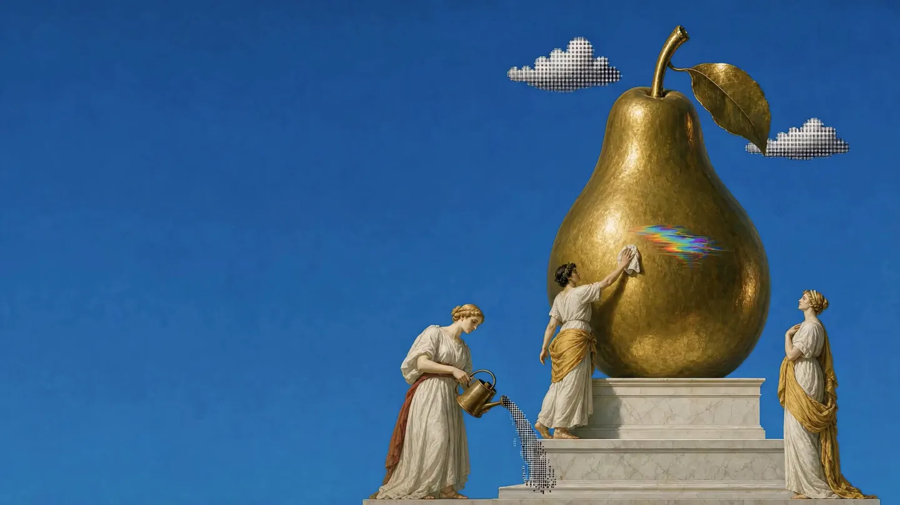
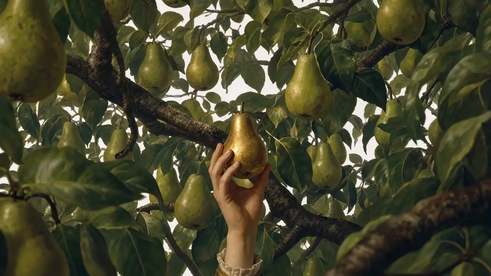
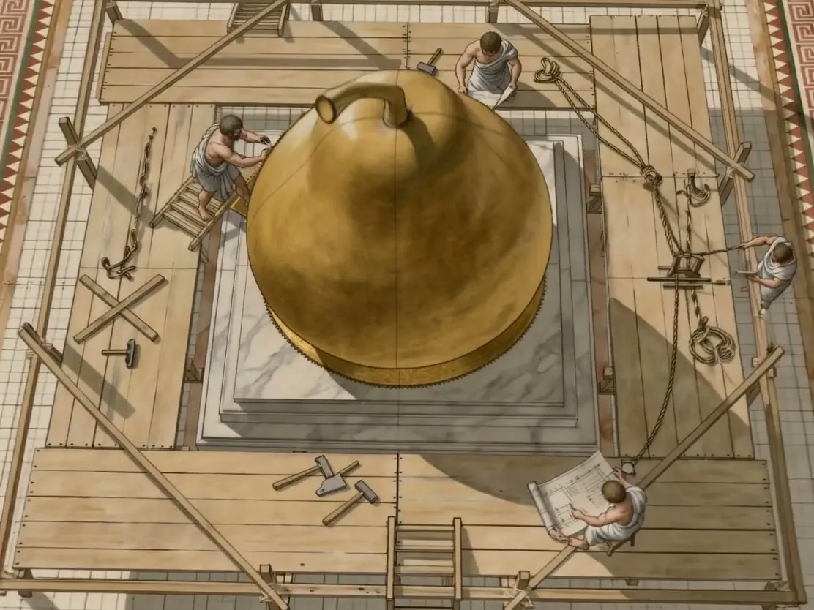
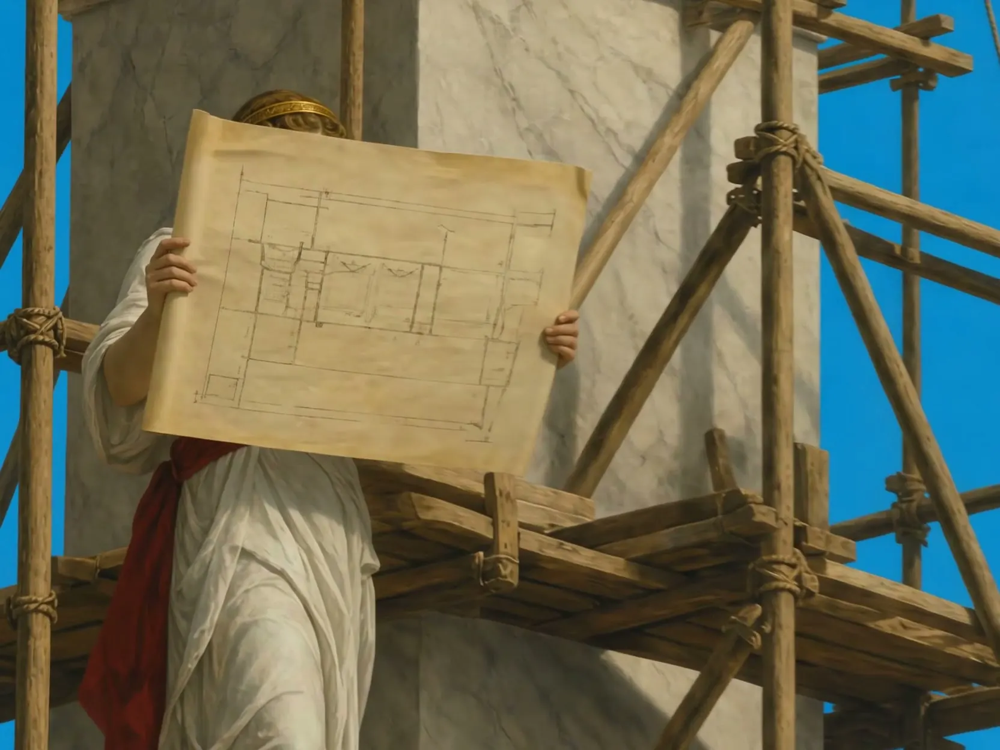
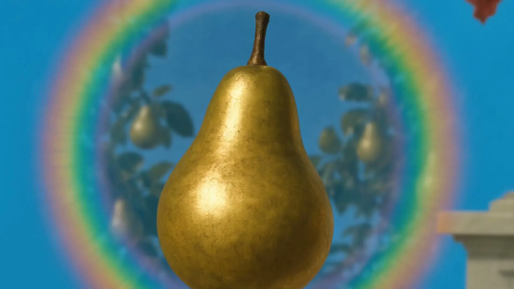
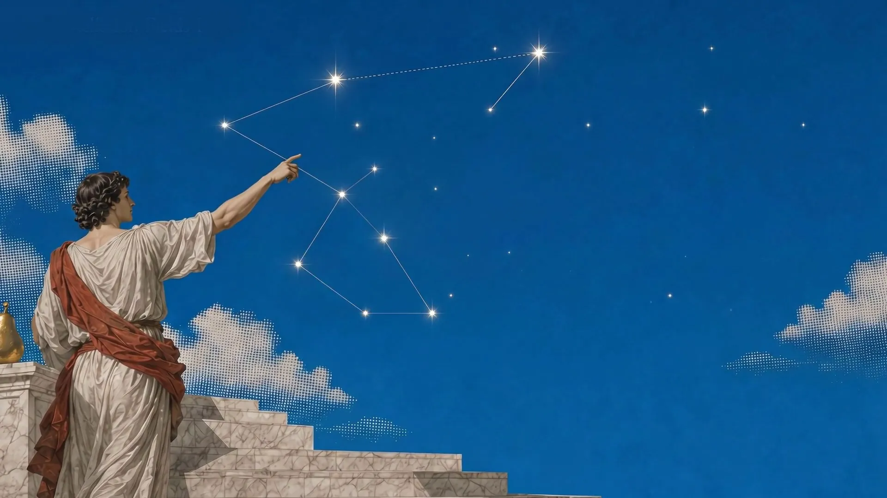
上列 6 帧取自落盘的 21 帧抽样（每组首中末各 3 帧），用于核验尺寸与内容；1,056 帧未全量下载。
六个采样器：A 影片、B reel 帧、C 图版、E coda 帧、G 树帧、P 图纸帧。六种转场模式（breathe、slice、halftone、displace、static、ring，默认 ring，?t= 可切），十种处理（slabs、halftone、warp、tear、fine、mosaic、dither、shred、ditherblock）。
W = .30 的环带上叠两阶角向 fbm 波瓣（1.9 与 5.3 倍频）；带内三层失效：7px 行撕裂（15Hz）、11px 块马赛克（24% 概率细化为 ×.28）、9px 网格的 ASCII 拓片——用 5×5 位图字形 .:-+=*%#@ 十级按亮度重印画面，再叠 13px 色散和暖色闪光 (1,.94,.80)·band²·.62。此处用真实序列帧作输入，fbm 降到 3 阶（原站桌面用更高阶、手机用 2 阶 fbmQ），其余常量为原值。道路 .775 到 .915 段内，L∞ 距离（方形）以 (2.35, 1.1) 各向异性从 (.48 + 20px, .57 + 75px) 张开，边界由四个场撕碎：fbm 大瓣 .295、细噪 .125、Bayer 有序抖动 .052、hash .15；燃边碳化为 (.72,.55,.40) → (.14,.10,.09)，余烬 (1,.62,.26)。同时画面沿缝分开 .05、向裂口推进 1 + 2p、漂移 (.03, −.018)、5 抽头运动模糊 .012、滚转 .13 弧度，边缘径向虚化 .01。缝上盖米色团 #e5e1d6（.85，高斯 .2×.62，两阶 fbm 咬边）。
不是填色，是四层结构：纸浆 fbm .115、顺纹 .055、齿 .038、杂点 .55；厚处偏暖薄处偏冷。纸上有太阳与云的光斑：全部正弦，速度 2.6、漂移 1.65、抖动 2.25、尺度 2.6、深度 .085。
fbmQ；r > t·1.6 + .26 或 r < t·1.6 − .86 可证明在前沿之外，跳过谐波、字形与闪光；工作章（.pf）：设计稿随滚动向上推，右侧 x=818 处 33 道刻度（每 5 道加长），读数 NN%；三组文案（SEO ×2、Custom software）在 y=0 / 1180 / 2050 处进入，标题从右侧 115% 滑入，芯片 9.16px mono 大写。
条款章（.fin）：两屏。第一屏在纸上（#2e2109），标题「No fees. A share of the upside.」；第二屏在暗底（#fffaea），「We say no more often than yes.」标题从下方 175% 升起（四次方缓出，每行错位 .12）。文字带 #inkf SVG 滤镜：feTurbulence 0.011 0.017 ×4 位移 34 递减到 0，模拟墨迹晕开。
签名（.sign）：「Asked before」Flecha L 加手写「signing」：11 段路径按 data-a/data-b 区间 stroke-dashoffset 逐段书写。
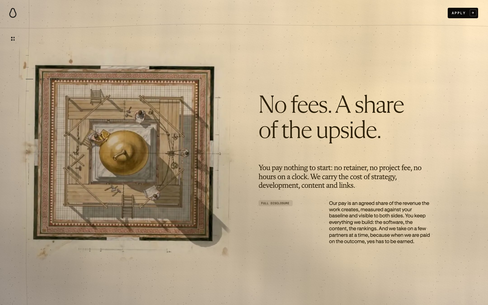
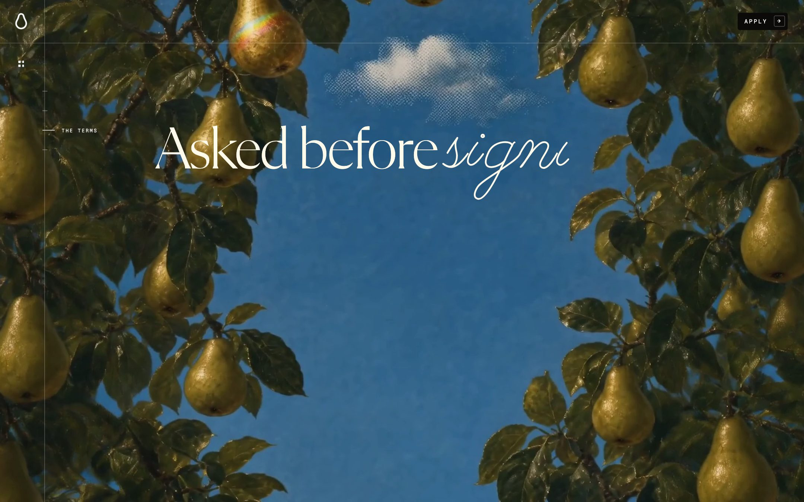
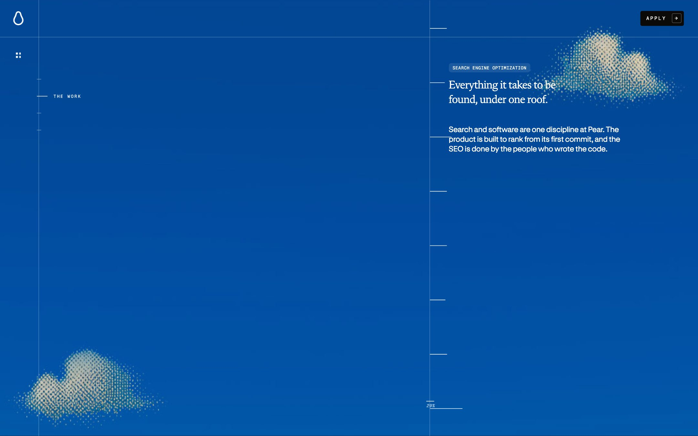
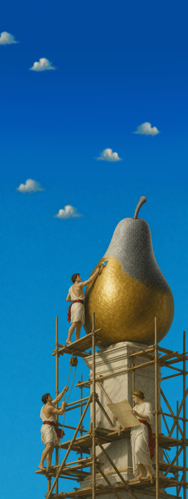
rot = −p × (360 − 72)；正对镜头（cos > .9）的卡点亮四芒星并展开答案；远卡按 (1 − o) × 8.4 / 2 模糊，o = (cos + 1) / 2。原站还有一条 SVG 引线从图像锚点引到卡角的 8×8 方块，此处未复现。980×760 舞台、透视 1700px。三块玻璃字段（姓名 236×62 @452,148；邮箱 @712,148；文本域 496×226 @452,226）与 262×40 按钮，从种子为 0 的线性同余序列给出的方向飞入。提交走 Turnstile 隐形校验后 POST /api/apply，字段含蜜罐 fax。
backdrop-filter: blur(9.5px) saturate(1.1)、两圈 conic 高光边（7.5s 与 11s 反向旋转，靠 @property --ra 让角度可动画）、inset 阴影，全部原值。鼠标移入整组会让未悬停的字段后退——原站是悬停字段前进 64px、其余后退 26px，本页按版心缩了位移量。CSS 关键帧：规则线 1.15s、准星 .72s、页眉 .7s（延迟 .42s）、菜单 .7s（延迟 1.1s）、标记描边 1.4s、四芒星 7s 一闪（覆盖层延迟 2.4s，问答卡无延迟，页脚那颗是 6s）、玻璃边 7.5s 与 11s、光斑 1.9s 起每 7 枚递增 .42s、轨道 7.5s 起每条加 2.6s。滚动驱动的部分用 JS 缓动表：smooth、smoother、out-quart、out-expo（1 − 2^(−9t)）、out-back、in-out、linear，外加规则线的 1 − (1 − t)³。
两种时间尺度并存：与滚动绑定的一切没有时长，只有区间；脱离滚动的装饰（闪烁、旋转边、光斑）都很慢，7 到 11 秒一周。
本页全部数值来自：Playwright 计算样式探针（1440×900 @1.5x）；样式表 index-Bd_JnIbr.css（61,948 B）拆出 712 条手写规则；index-BhJdAf8K.js（323,793 B）美化为 13,564 行、应用层 9,380 行之后逐行通读；沿道路 41 步滚动记录的 730 条网络响应；35 个道路位置的逐段截图；以及服务端直连补抓的 manifest、帧样本、影片与图版。
| # | 没拿到什么 |
|---|---|
| 1 | 整页截图为 0 字节——舞台 5350vh 超过单帧上限，以 35 张道路截图与 8 帧关键帧替代。 |
| 2 | 1,056 帧只落盘每组首中末各 3 帧（21 帧）作尺寸与内容核验，未全量下载。 |
| 3 | /768 手机档只从 manifest 读出计数与 URL 规则，未下载。 |
| 4 | /api/apply 未触发——表单链路与 Turnstile 校验自源码读出，未发送真实申请。 |
| 5 | 手机真机行为（7300vh 舞台、Me 重映射、PHONE 分支、自适应 DPR）均来自源码，未真机实测。 |
| 6 | 截图走 SwiftShader 软渲染，逐帧正确但帧率不代表真机手感。 |
| 7 | 未启用外部研究通道，无奖项、访谈或制作方信息核验；影像制作方式不作判断。 |
核查中改正六处漂移，其中两处改变了结论方向：手机舞台是 7300vh 而非 5350vh；Me 表是重新分配比例而非压缩各段。全部留痕于《事实核查》。
设计解构 · 复刻指南 · 出处与方法 · 事实核查 · 设计评审 · tokens.json · design-tokens.css